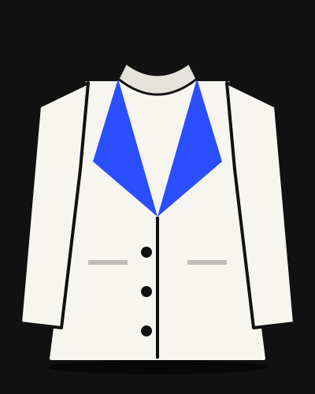
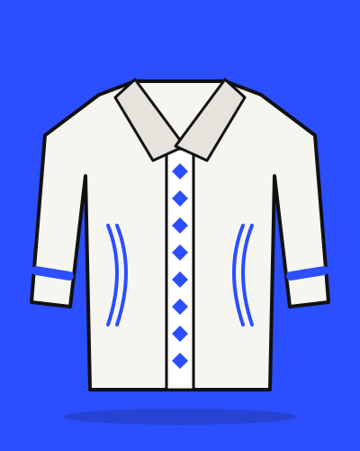
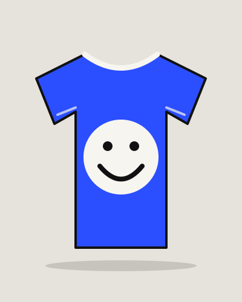
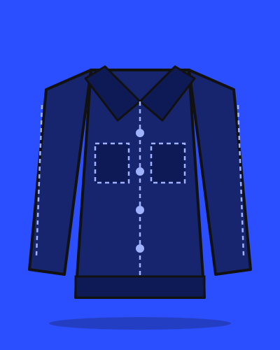
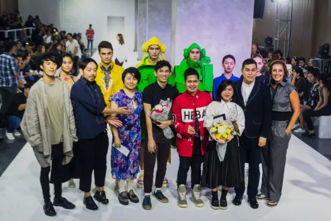

The Waiting Room
Shown at MNL Fashion Week in September 2026. A collection inspired by the four days between death and birth.
Randolf is RJ Santos's label for pop-culture-minded ready-to-wear and bespoke barongs, with embroidery designed around the person wearing it.

Randolf makes ready-to-wear pieces and bespoke barongs with embroidery designed around each client.

Shown at MNL Fashion Week in September 2026. A collection inspired by the four days between death and birth.

The collection Randolf presented on day one of BYS Fashion Week.

A denim-led collaboration, launched online and in stores.
Tell us about the occasion. Randolf designs the embroidery around the music and stories of each client, so the more you share, the better the first conversation.
Fill in the form and we will reply with next steps.
RJ Santos started Randolf in 2013 after graduating from the University of the Philippines. The label began as a casual, humorous take on pop culture and has grown into a recognized name in Filipino menswear.
Its collections have used recycled fabric scraps, and its barongs have become a signature, with embroidery designed around each client.
Randolf collections have used recycled fabric scraps, so leftover material becomes new clothing instead of landfill. Add details here about the materials, local workshops and embroiderers you want to highlight.
Recognition for the label and the stories written about it.

Bench Design Awards, 2017 One of three winners, which led to a debut at Amazon Fashion Week Tokyo. MEGA Fashion Awards, 2024
Nominated for Menswear Designer.
MEGA Fashion Awards, 2024
Nominated for Menswear Designer.
 BYS Fashion Week
Showed the Ready to Serve collection on day one.
BYS Fashion Week
Showed the Ready to Serve collection on day one.
 MNL Fashion Week, 2026
Presented The Waiting Room at SMX Aura.
MNL Fashion Week, 2026
Presented The Waiting Room at SMX Aura.
Ready-to-wear is available through these partners. For bespoke pieces, use the inquiry form above.
Questions about an order, a collaboration or press? Reach out.
Email
kennethpanamogan@gmail.com
Phone
0981-537-8731